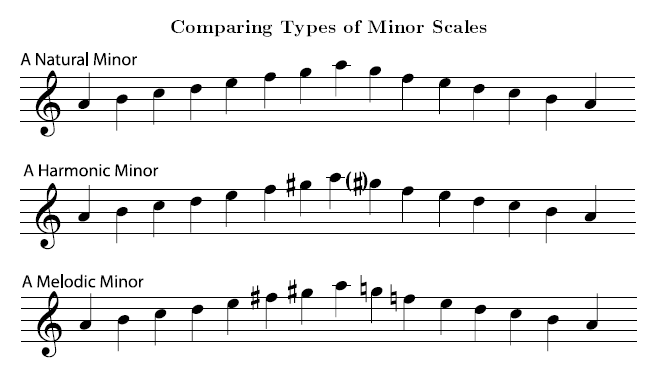
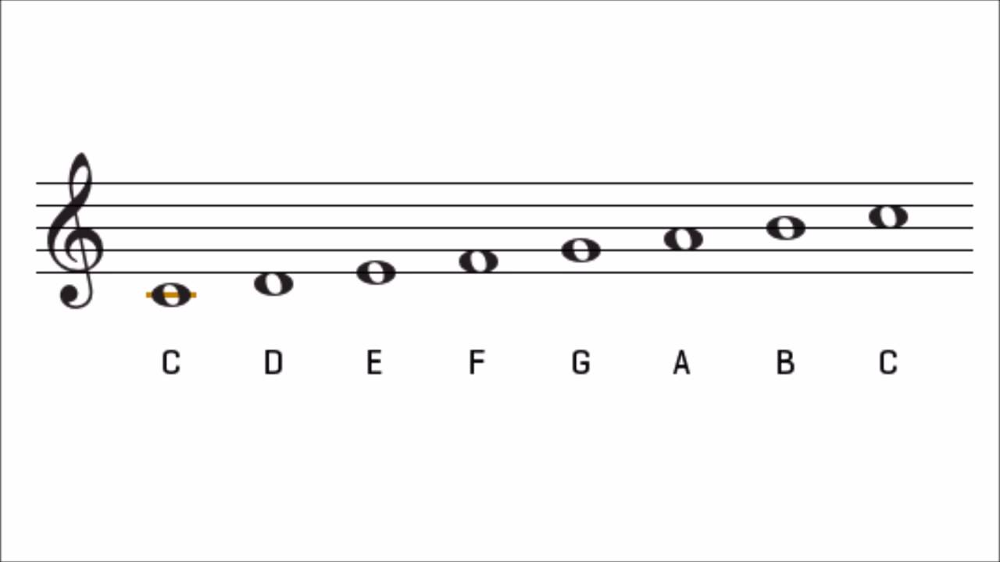
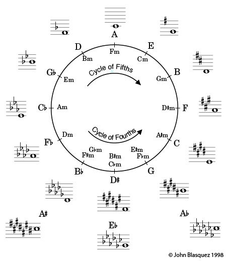
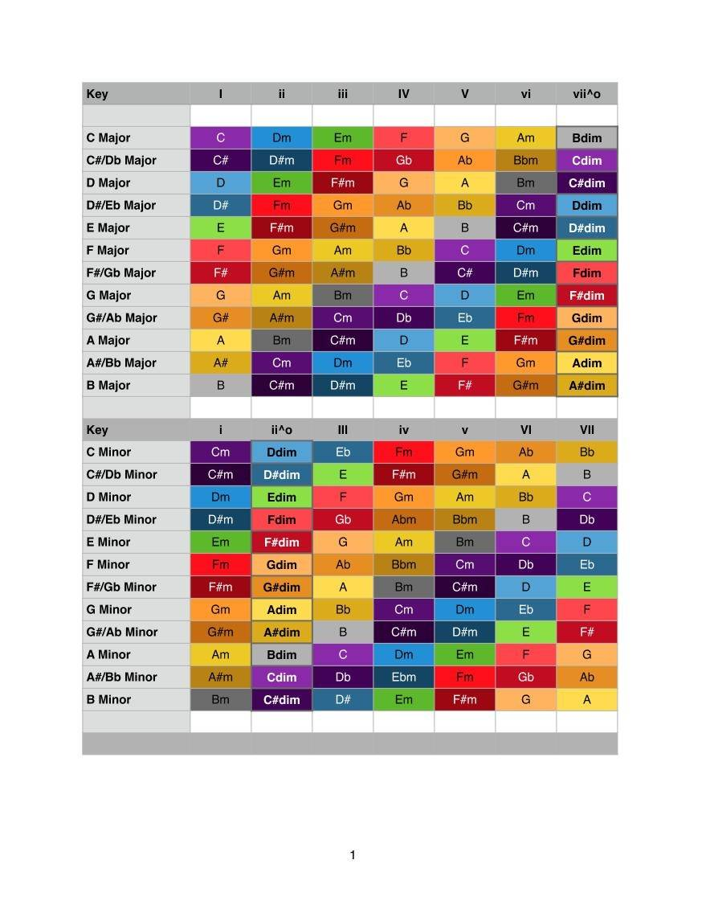
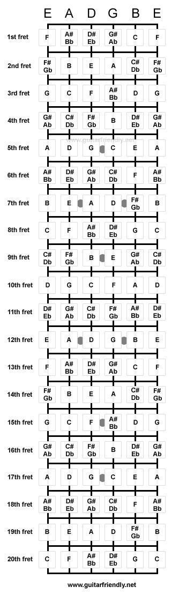
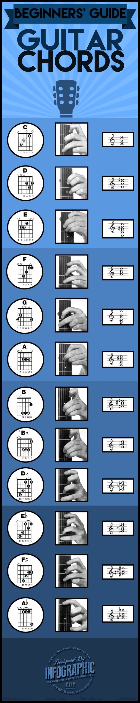
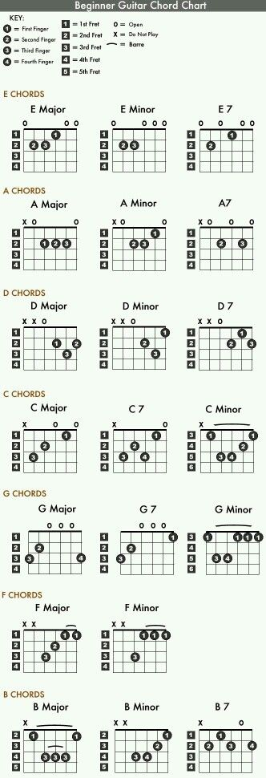
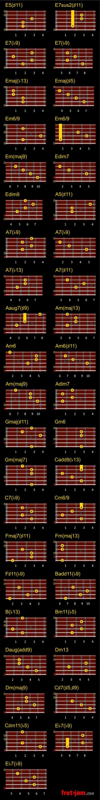
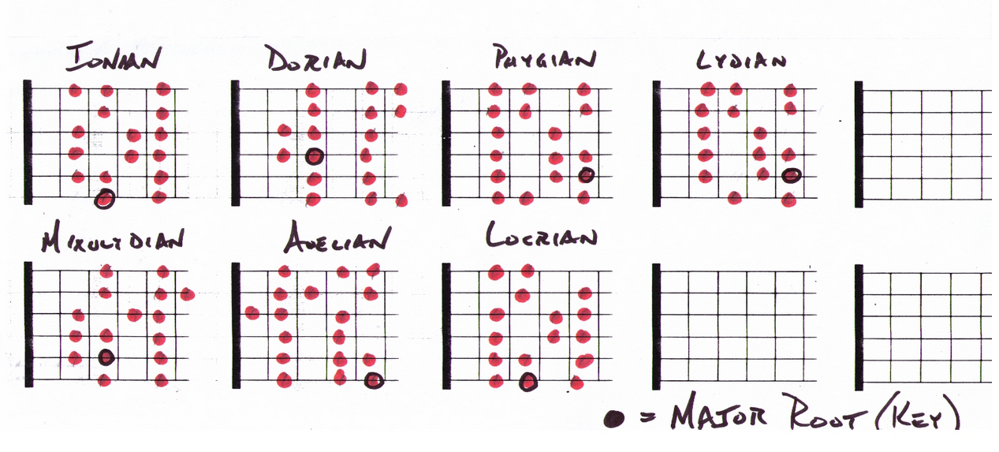

Scales and Chords
Geared towards guitar and piano, below you will find a vast collection of information pertaining to scales and chords. In music theory, a scale is any set of musical notes ordered by fundamental frequency or pitch. A scale ordered by increasing pitch is an ascending scale, and a scale ordered by decreasing pitch is a descending scale. Some scales contain different pitches when ascending than when descending, for example, the melodic minor scale.
The following is an example of C major scale.
Below is the circle of 5ths. If you can master this, you're off to a good start for improvisation.
The chart below lists major and minor scales with their corresponding notes.




Learn more scales on the guitar:
Guitar Scales and Modes Explained -- by Matt Warnock
Learn more guitar in general:
More guitar exercises...

At some point I will replace the rest of these copyright images with illustrations of my own.
The theories themselves are not necessarily copyright... but the images I've used are!
I did make the diagram below that lists the seven modes.
This process will take place over time, but for now I'm going to work on other elements within this website,
such as the comments page and the homepage.